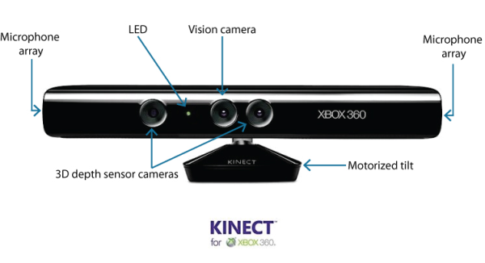
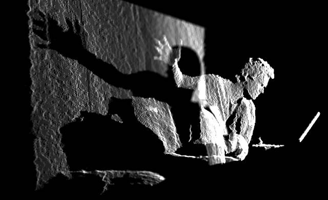
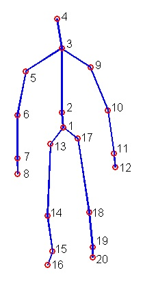
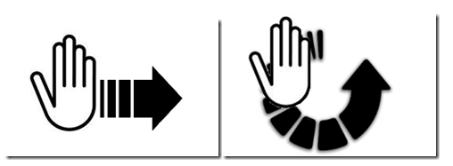

Nous avons amorcé le projet en récupérant le code d’un projet fait en classe lors de la session Automne 2014. Le coeur du projet n’étant pas dans la création du Pong, mais dans l’utilisation de la Kinect, nous avons réutilisé ce projet pour faire nos premiers tests dans Unity.
L’intégration de la Kinect dans Unity nécessitait quelques outils nécessaires, dont un “wrapper” qui a permis d’interpréter les données envoyées par la caméra. Unity n’étant pas compatible avec .NET 4.0, nous ne pouvions utiliser les librairies officielles de Microsoft.
Nos premiers tests furent d’obtenir la position des membres du corps et de les transposer sur les palettes de jeu. Nous avons rapidement pu lier le mouvement vertical des palettes au mouvement vertical d’une main grâce au “wrapper”. Nous avons initialement créé un Pong un joueur qui se jouait une main contre l’autre.
La Kinect gère elle-même la reconnaissance de joueurs multiple en leur attribuant un identifiant. Nous avons donc simplement réutilisé cette fonction et l’avons implémentée pour créer un mode deux joueurs.
Afin de permettre la sélection du nombre de joueurs (puisque le testeur ne sera pas nécessairement accompagné), nous avons créé un menu rudimentaire contrôlé avec un curseur. Celui-ci se sert de la position de la main par rapport au corps.
Un des aspects prédominants de la recherche repose sur la reconnaissance de gestuelles. Une gestuelle est un déplacement de bras selon une forme particulière. Nous avons donc exploré des outils externes la facilitant. Des outils comme OpenNI, NiTE, des librairies de détection de doigts et un projet particulier démontrant la possibilité de détecter une main agrippée ont été explorés pendant plus d’une semaine. Nous avons conclu qu’étant donné le temps limité et pour l’aspect pédagogique des tests, il était plus pertinent de créer notre propre gestion des mouvements.
Nous voulions implémenter deux types de gestuelles. Le “clap” (rapprochement et éloignement vertical d’un bras sur l’autre) et le “swipe” (balayement horizontal). La première à être réalisée fut le clap qui est implémentée dans la jouabilité pour utiliser des bonus. Éloigner agrandit notre palette alors que rapprocher réduit la palette ennemie.
Le “swipe” fut créé avec une machine à état en tête. Même si ce “design pattern” n’a pas été implémenté, la gestuelle conserve tout de même son état afin de gérer un mouvement de retour (exemple, le retour du bras vers la droite après un “swipe” vers la gauche) et une marge d’erreur. Le “swipe” vertical a été envisagé, mais uniquement le “swipe” horizontal a été implémenté. Celui-ci permet de balayer un bras au-dessus des hanches rapidement pour faire un mouvement vers la gauche ou la droite.
Nous avons décidé qu’il serait judicieux d’implémenter le “swipe” dans les menus pour démontrer la possibilité d’utilisation de la Kinect dans un UI. Nous avons donc créé un nouveau menu et une nouvelle fonctionnalité pour utiliser ce mouvement. Un menu de sélection de personnages a été ajouté, et le personnage choisi est retrouvé dans le jeu. Celui-ci suit nos mouvements et est animé selon nos gestes.
Finalement, quelques descriptions de fonctionnalités ont été ajoutées dans le UI du jeu pour guider l’utilisateur et quelques modifications minimes de finition ont été faites.
Nous avons approfondi nos connaissances sur plusieurs sujets lors de la mise en place de notre prototypage. Ces apprentissages se répartissent sur quatre points principaux:
Les acquisitions sont donc le résultat de recherches, de conception et d’essais réalisés tout au long de la session d’hiver 2015.
L’utilisation de la Kinect comme outil de travail nous a permis d’apprendre comment s’adapter à un nouvel outil peu conventionnel. Même si la Kinect rejoint maintenant un large public, la presque totalité des jeux se joue avec un clavier et une souris ou une manette. Il était donc inhabituel de penser au jeu vidéo manipulé par caméra. Nous avons donc dû effectuer plusieurs heures de recherche en vue d’apprendre comment la Kinect obtenait ses données, quelles étaient les fonctionnalités qu’elle offrait et comment nous pouvions nous en servir.
La démarche la plus fonctionnelle fut de se faire un portrait global de l’outil avec ses fonctionnalités soulignées. Ensuite, nous avons ciblé les fonctionnalités que nous voulions exploiter. Nous avons finalement construit notre prototype de façon modulaire en incluant les fonctionnalités au fur et à mesure. Cette technique de travail nous a permis de progresser rapidement dans nos recherches.
Nous avons donc non seulement appris à travailler avec la Kinect, mais surtout comment approcher la nouvelle technologie dans un projet.
La Kinect envoie des données non traitées aux programmes l’utilisant. Celle-ci transmet quelques informations de base, telles que la position de points sur un corps, la présence de squelettes (de corps qui sont reconnus par la caméra), le flux vidéo (l’image capturée, telle avec une caméra vidéo) et le flux audio (le son capturé).
Ces données ont donc dû être interprétées pour que l’on puisse les réutiliser dans notre projet. Grâce aux wrappers, nous avons pu transposer les données dans notre projet Unity afin de les réutiliser facilement. Cette transposition nous a permis de comprendre le fonctionnement de la Kinect et la signification de ses données.
Pour résumer, la Kinect envoie des données brutes qui doivent être interprétées afin d’être utilisées.
L’intérêt principal du projet reposait sur la capture de mouvement. Il était nécessaire de pouvoir contrôler le jeu en bougeant, comme offert par la plupart des jeux supportant la Kinect. Nous avons donc dû utiliser les fonctionnalités offertes par les wrappers pour reconnaître les mouvements du corps. Nous pouvions relier un portrait grossier des articulations du corps dans un contrôleur en points.
Ce contrôleur était animé (et donc bougeait) selon nos mouvements. On pouvait donc reconnaître différentes parties du corps et les réutiliser selon nos besoins. Nous avons donc compris la base de la capture de mouvement, notamment avec la main qui contrôle nos palettes de jeu et le curseur contrôlé avec la position de la main.
De plus, nous avons pu obtenir une version très rudimentaire de la capture de mouvement du corps entier. En reliant le contrôleur à un modèle, nous avons compris comment fonctionnaient les animations et leur capture de mouvement de façon simplifiée.
Le dernier point soulevé en lien à nos apprentissages correspond aux techniques de reconnaissance de gestuelles. Il était beaucoup plus difficile que nous l’avions imaginé d’implémenter les gestuelles. Nous avons opté pour coder nous même nos propres gestuelles. Ainsi, nous avons pu comprendre comment fonctionnait la capture de mouvement. Par exemple, un mouvement a une position de début, plusieurs possibilités de milieu et une position de fin.
Ces motifs sont souvent utilisés dans les jeux supportant les contrôles par mouvement. L’inclusion du balayement horizontal (voir image ci-dessus) et du clap (rapprochement ou éloignement vertical des deux bras) a permis de comprendre comment implémenter ces mouvements. De nombreuses questions ont été répondues : quelles sont les limites du mouvement; en combien de temps devons-nous le faire; quelles sont les conditions pour considérer un mouvement terminé ou commencé; etc.
Les expérimentations avec l’outil se sont bien déroulées. Il y a eu relativement peu de problèmes étant donné la nouveauté du matériel. Bien sûr, certaines complications se sont ajoutées à notre tâche. Ces problèmes sont répartis sous deux volets, soit la recherche documentaire et les expérimentations avec l’outil.
Durant notre recherche et notre prototypage, nous avons obtenu de très bons résultats. En voici les résultats selon nos objectifs.
La Kinect gère cette fonctionnalité pour nous.
La Kinect gère cette fonctionnalité pour nous.
Nous avons facilement réussi à garder trace de la main dans l’écran.
Une fois la main détectée, nous avons facilement pu faire bouger la palette.
Nous avons facilement pu intégrer une deuxième personne dans le jeu.
Nous avons réussi à faire une navigation plutôt fluide, mais c’est loin d’être parfait. Le clic de bouton n’est pas très naturel et rend la navigation entre les menus lente.
Nous avons réussi à afficher la main à l’écran.
De plus, nous avons été très surpris par la facilité d’utilisation de la Kinect et nous avons dépassé nos attentes quant aux résultats. Ce qui nous a permis d’implémenter plus de fonctionnalités que prévu. Nous avons ajouté un mouvement de balayage (Swipe) au menu, ce qui rend la sélection d’options beaucoup plus rapide. Notre implémentation du balayage est assez bonne pour que le tout soit naturel d’utilisation. Nous avons aussi ajouté une gestuelle dans le jeu. On peut faire un clap vertical pour rétrécir la palette de l’autre joueur. Le tout fonctionne très bien, on peut déplacer notre palette, faire un clap et retourner au déplacement de notre palette très facilement.
Le but de notre recherche était de découvrir les fonctionnalités offertes par la Kinect. Nous savions qu’il était possible de transposer des mouvements pour manipuler une application et qu’il était possible de le faire à plusieurs, de manière simultanée. Nous pensions aussi que la gestion des mouvements de manière naturelle serait complexe. Finalement, nous estimions qu’il serait difficile de reconnaître les joueurs selon leurs entrées et sortis du champ de vision de la caméra.
Nos recherches ont donc permis la détection de mouvement et leur interprétation dans une application Unity, l’identification de gestuelles simples, la navigation dans une interface utilisateur à l’aide de capture de mouvement, l’intégration de la capture de mouvement dans l’animation d’un modèle et l’intégration de la capture de mouvement comme contrôleur dans un jeu vidéo.
Si nous poussions la recherche plus loin, nous pourrions tenter de découvrir s’il est possible de détecter des mouvements plus complexes ou d’en détecter plusieurs à la fois. Nous pourrions aussi rechercher dans d’autre champ de recherche de la Kinect comme la réalité augmenté et tenté de manipuler des objets 3D dans notre monde.